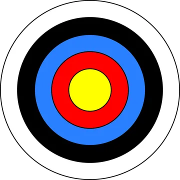
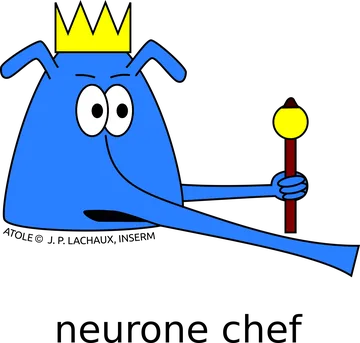
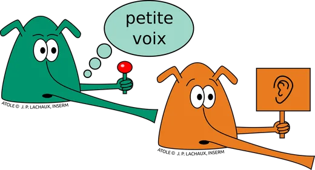

0Préambule
- Fiche pédagogiqueTélécharger
Les ressources de la formation EDI
Les kits pédagogiques ATOLE (2018) et ADOLE (2023) et les ressources créées par ApStraCo, rangés en cinq dossiers. Vous pouvez télécharger chaque document, regarder les vidéos directement dans la page et parcourir les vignettes des séquences.
Les fichiers sont hébergés sur un serveur Nextcloud (Zaclys). Vous pouvez aussi ouvrir le dossier complet pour le parcourir, ou tout télécharger d’un coup (645 Mo).
Aucune ressource ne correspond à votre recherche.

01
Pour comprendre le programme avant de se lancer : les documents de présentation et des liens pour aller plus loin.
02
Pour chaque séquence : la fiche pédagogique, les images à projeter, la vidéo d’introduction et les vignettes.
Cliquez sur une image pour l’agrandir. Le bouton « Télécharger » de l’agrandissement enregistre l’original.
Cliquez sur une image pour l’agrandir. Le bouton « Télécharger » de l’agrandissement enregistre l’original.
Cliquez sur une image pour l’agrandir. Le bouton « Télécharger » de l’agrandissement enregistre l’original.
Cliquez sur une image pour l’agrandir. Le bouton « Télécharger » de l’agrandissement enregistre l’original.
Cliquez sur une image pour l’agrandir. Le bouton « Télécharger » de l’agrandissement enregistre l’original.
Cliquez sur une image pour l’agrandir. Le bouton « Télécharger » de l’agrandissement enregistre l’original.
Cliquez sur une image pour l’agrandir. Le bouton « Télécharger » de l’agrandissement enregistre l’original.
Cliquez sur une image pour l’agrandir. Le bouton « Télécharger » de l’agrandissement enregistre l’original.
Cliquez sur une image pour l’agrandir. Le bouton « Télécharger » de l’agrandissement enregistre l’original.
Cliquez sur une image pour l’agrandir. Le bouton « Télécharger » de l’agrandissement enregistre l’original.
03
Les affiches à afficher en classe et les outils pour préparer les séances et suivre la progression des élèves.

04
La version 2023 du programme. Commencez par le carnet d’accompagnement. Les médias sont nommés d’après la séquence, l’activité et l’étape des fiches : S1-A3-E2b correspond à séquence 1, activité 3, étape 2b.

05
Des jeux, des PIM pour des jeux de société et des images pour créer vos propres supports.
Cliquez sur une image pour l’agrandir. Le bouton « Télécharger » de l’agrandissement enregistre l’original.
Cliquez sur une image pour l’agrandir. Le bouton « Télécharger » de l’agrandissement enregistre l’original.
Vidéos d’introduction : dans le kit ATOLE, les séquences 7 et 8 partagent la même vidéo, de même que les séquences 9 et 10.